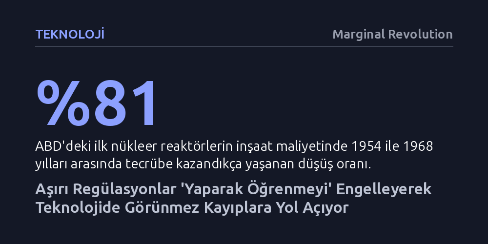

TEKNOLOJI · Marginal Revolution · 2026-09-09
Aşırı katı düzenlemeler, genetiği değiştirilmiş mikroplar gibi yenilikçi teknolojilerin sahaya çıkmasını engelleyerek yaparak öğrenme sürecini baştan yok ediyor. Bu durum, nükleer enerjide olduğu gibi kamuoyunun fark bile edemediği devasa bir teknolojik kayba ve görünmez maliyete yol açıyor.
Bir teknolojinin doğmasını bürokrasiyle engellemenin, yaparak öğrenme döngüsünü kırarak kamuoyunun hiç fark edemediği devasa bir ilerleme ve refah kaybı yarattığını gösteriyor.

Bir hükümet düzenlemesi benzin fiyatlarını artırdığında veya mevcut bir hizmeti pahalılaştırdığında toplumsal tepki anında gelir; çünkü insanlar ceplerinden çıkan parayı doğrudan hisseder. Fakat bir regülasyon, daha en baştan yepyeni bir endüstrinin doğmasını engellediğinde kimse öfkelenmez. Ortada var olmayan bir ürünü kaybetmiş sayılmayız; dolayısıyla neyi yitirdiğimizin farkına dahi varamayız. Bu durum, modern ekonomilerde devasa ancak tamamen görünmez teknoloji mezarlıkları yaratır.
Bu görünmez kaybın en somut tarihsel örneği nükleer enerjidir. ABD'de 1954 ile 1968 yılları arasında inşa edilen ilk gösterim reaktörlerinde, mühendislik deneyimi arttıkça inşaat maliyetleri yüzde 81 oranında gerilemişti. Ancak 1970'lerin başındaki yargı kararları ve Three Mile Island kazası sonrasında devreye giren aşırı regülasyonlar süreci tersine çevirdi; 1967-1972 arasında başlanan projelerde maliyetler yüzde 187 fırladı. İnşaatlar durma noktasına geldi ve nükleer teknolojinin doğal gelişim eğrisi kırıldı.
Eğer nükleer enerjideki erken dönem öğrenme ve yaygınlaşma eğilimi kesintiye uğramasaydı, dünya bugün bambaşka bir enerji dengesine sahip olabilirdi. Ekonomist Peter Lang'ın modellemeleri, tarihsel eğilimin sürmesi halinde nükleer enerjinin 2015 yılına gelindiğinde onda bir maliyetle üretilebileceğini ortaya koyuyor. Dahası, kömür ve fosil yakıtların yerini alacak bu temiz enerji sayesinde 9,5 milyona varan erken ölümün önüne geçilebilirdi. Bu sayıyı dörtte birine indirseniz dahi geriye milyonlarca insanın kurtulabileceği gerçeği kalır.
Üstelik nükleer enerjinin önü böylesi hantal regülasyonlarla tıkanmamış olsaydı, bugün insanlığın en büyük küresel krizlerinden biri olan iklim değişikliği belki de bir sorun olmaktan çıkacaktı. Nükleer enerjinin şansı, geride en azından neyi kaybettiğimizi hesaplayabileceğimiz kadar reaktör bırakmış olmasıydı. Çok daha trajik olanı ise bürokratik engeller yüzünden varlığı dahi bilinmeyen, hiç gün yüzü görmemiş teknolojilerdir.
Niko McCarty'nin Works in Progress dergisindeki incelemesi, nükleer enerjiden çok daha görünmez bir başka teknoloji mezarlığını gözler önüne seriyor: genetiği değiştirilmiş mikroplar. Modern biyomühendislik; okyanuslardaki plastik ve petrol kirliliğini temizleyen, bağırsak hastalıklarını tedavi eden, cilt sağlığını koruyan, binalarda kendi kendini onaran malzemeler üreten ve metallerin paslanmasını önleyen mikroorganizmalar tasarlama potansiyeline sahip.
Ancak bu potansiyel kırk yıldır katı düzenleme duvarlarına çarpıyor. 1980'lerde ABD'li bürokratlar, genetik kodların kimyasal moleküllerden oluştuğu mantığıyla canlı mikroorganizmaları geleneksel kimyasal maddeler yasası kapsamına soktular. Ne parlamentoda bir tartışma yapıldı ne de kamuoyunda bir oylama gerçekleşti. Fahiş onay maliyetleri ve aşırı geniş tanımlar nedeniyle genetiği değiştirilmiş mikropların çevreye salınması fiilen imkânsız hale getirildi. Sonuç olarak bu canlılar yalnızca dar tarım ve çevre temizliği deneylerinde hapsoldu, ticari hayata neredeyse hiç geçemedi.
Teknolojik ilerlemenin temel motoru sahadaki tecrübedir; yani insanlık yaparak öğrenir. "Yapmak yoksa öğrenmek de yoktur." Sahaya çıkan ilk ticari ürün nadiren kusursuz veya en güvenli sürümdür; tasarım açıkları barındırır, pahalıdır ve aksaklıklar gösterir. Ancak o ilk kusurlu ürünü piyasaya sürmez ve hatalarından ders çıkarmazsanız, çok daha güvenli, ucuz ve verimli olan beşinci ürüne asla ulaşamazsınız. İlk adımı engellemek, zincirin sonraki tüm halkalarını yok eder.
Eğer genetiği değiştirilmiş mikroplar son kırk yıl boyunca sahada denenip geliştirilebilseydi, bugün hayal bile edemeyeceğimiz bir biyoteknoloji ekosisteminde yaşıyor olabilirdik. Resmi gazete sayfalarına gömülen ihtiyari bürokratik kararlar, sadece mevcut ürünleri değil, insanlığın gelecekte neleri keşfedebileceğini de görünmez kılıyor. Daha iyisini inşa edebilmenin tek yolu, önce inşa etmeye izin vermektir.